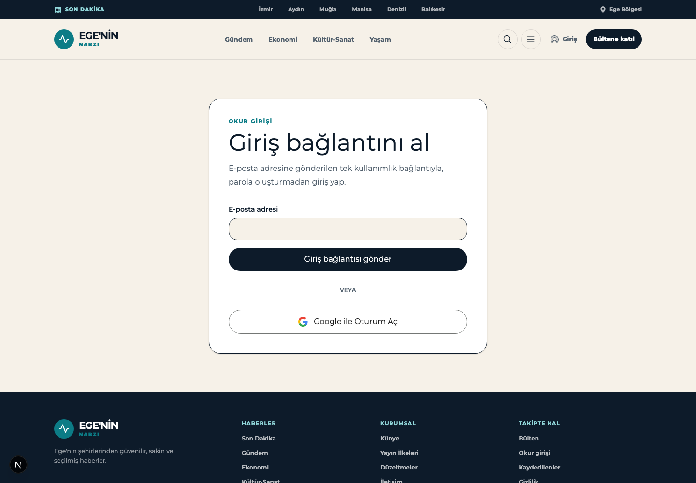
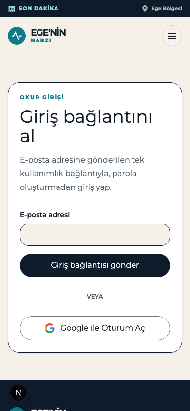
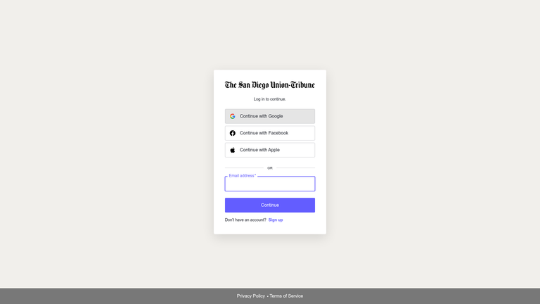
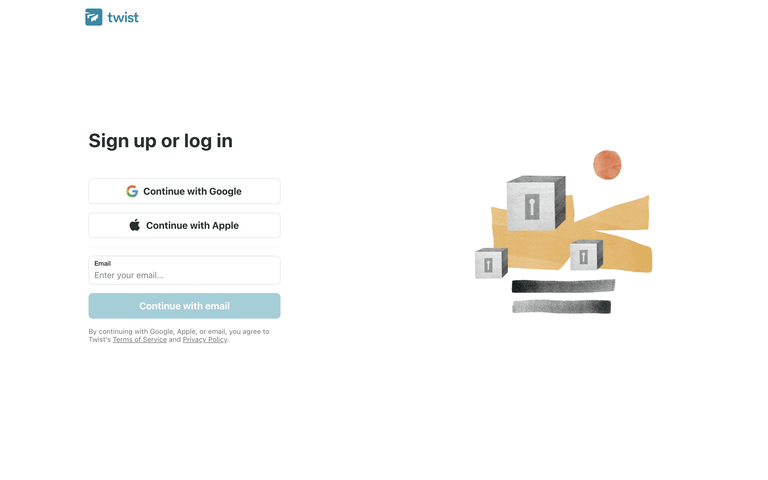
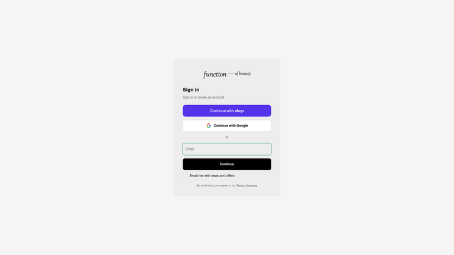
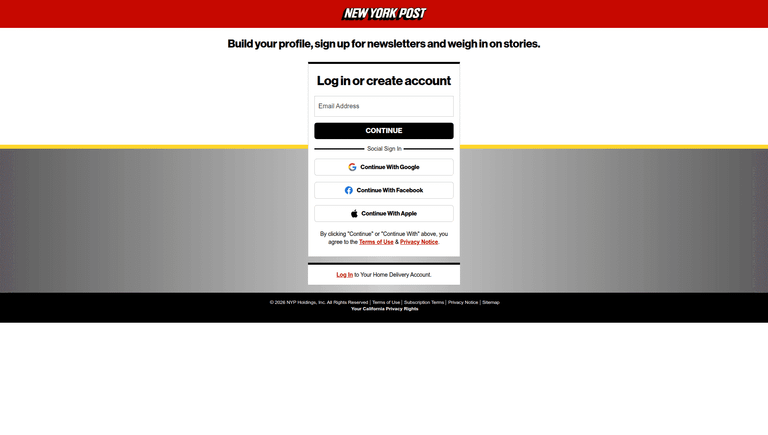
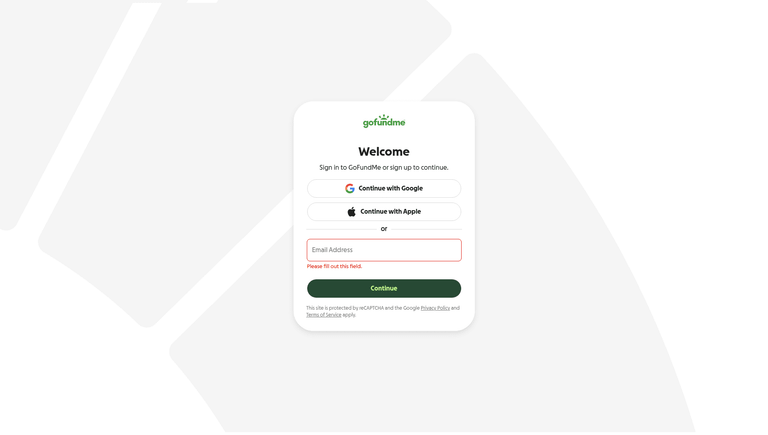
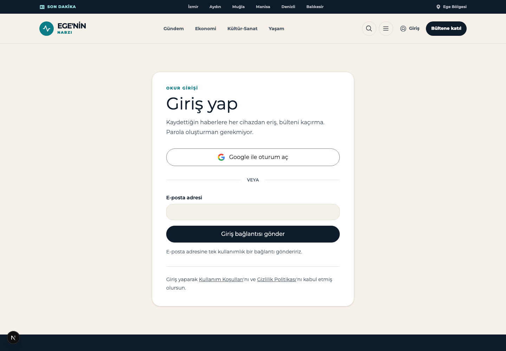
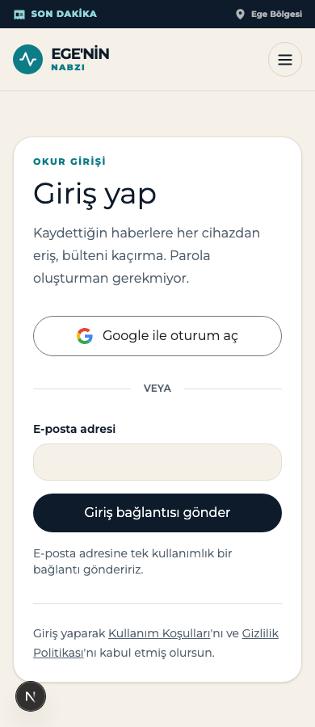

Design Improvement: Giriş sayfası (/giris) — Google ile giriş
TL;DR
Google girişi çalışıyor ama sayfada ikinci sınıf bir seçenek gibi duruyor: başlık hâlâ yalnızca magic-link'i anlatıyor ("Giriş bağlantını al"), Google düğmesi formun altına itilmiş ve "VEYA" ayracının çizgileri hiç görünmüyor — çünkü --color-line değişkeni projede hiçbir yerde tanımlı değil. İncelediğim beş referansın dördü Google'ı e-posta formunun üstüne koyuyor ve hepsi düğmelerin altında bir yasal onay satırı taşıyor; bizde o satır hiç yok.
Current State

/giris — 1440×1000. Kart içinde: eyebrow, başlık, açıklama, e-posta formu, "VEYA" ayracı, Google düğmesi.
Improvement Ideas
1. Google'ı formun üstüne al, başlığı yöntemden bağımsız yap ⭐ (en yüksek etki)
Başlık "Giriş bağlantını al" sayfada tek bir giriş yöntemi varken doğruydu. Artık iki yöntem var ve başlık bunlardan yalnızca birini tarif ediyor — Google ile girmek isteyen okur, doğru sayfada olduğundan emin olamıyor. Aynı şekilde açıklama metni de yalnızca magic-link mekaniğini anlatıyor.
Referansların dördü şu sırayı kullanıyor: yöntemden bağımsız başlık → Google → ayraç → e-posta. Google tek tıkla bitiyor, magic-link ise "yaz → gönder → e-postana git → bağlantıya tıkla → geri dön" adımlarını gerektiriyor. Hızlı yolu üste koymak standart hâline gelmiş durumda.
Inspired by:



Why this works: Başlık artık her iki yöntemi de kapsıyor, hızlı yol önce geliyor ve e-posta formu hâlâ tam olarak eskisi kadar erişilebilir — kimseden bir şey alınmıyor, yalnızca sıra değişiyor.
Dürüst not — bu evrensel değil: New York Post tam tersini yapıyor, e-postayı üstte tutup sosyal girişi "Social Sign In" ayracının altına koyuyor. Yani sıralama bir tercih; ama başlığın yöntemden bağımsız olması ve yasal satır (fikir 3) her iki düzende de geçerli.
Sketch:
┌───────────────────────────────────────┐
│ OKUR GİRİŞİ │
│ Giriş yap │ ← yöntemden bağımsız
│ Kaydettiğin haberlere ve bültene │
│ eriş. │
│ │
│ ┌──────────────────────────────────┐ │
│ │ G Google ile oturum aç │ │ ← üste taşındı
│ └──────────────────────────────────┘ │
│ │
│ ───────────── veya ───────────── │ ← çizgiler artık görünüyor
│ │
│ E-posta adresi │
│ ┌──────────────────────────────────┐ │
│ └──────────────────────────────────┘ │
│ ┌──────────────────────────────────┐ │
│ │ Giriş bağlantısı gönder │ │
│ └──────────────────────────────────┘ │
│ │
│ Devam ederek Kullanım Şartları ve │ ← fikir 3
│ Gizlilik Politikası'nı kabul edersin. │
└───────────────────────────────────────┘2. --color-line tanımlı değil — ayraç çizgileri görünmüyor, kenarlıklar mürekkep siyahı 🔴
Bu bir tasarım tercihi değil, doğrulanmış bir hata. Tarayıcıda ölçtüm:
| Ölçüm | Beklenen | Gerçek |
|---|---|---|
--color-line token değeri | #e5e0d8 benzeri yumuşak bir çizgi | "" (tanımsız) |
Ayraç çizgisi background-color | yumuşak gri | rgba(0, 0, 0, 0) — tamamen şeffaf |
Kart kenarlığı border-color | yumuşak gri | rgb(13, 27, 42) — --color-ink, tam mürekkep |
Input kenarlığı border-color | yumuşak gri | rgb(13, 27, 42) — tam mürekkep |
Sebep: globals.css içinde --color-paper, --color-ink, --color-teal, --color-ochre tanımlı ama --color-line hiç tanımlanmamış. background-color: var(--color-line) geçersiz kalıyor ve şeffafa düşüyor; border-color ise currentColor'a düşüp metnin mürekkep rengini alıyor.
Bu tek satırlık eksik yalnızca giriş sayfasını değil, projede 29 kullanım yerini etkiliyor (grep -rn "var(--color-line)" → 29 sonuç, --color-line: → 0 sonuç). Yani yönetim paneli kartları, bülten sayfası, arşiv listeleri hepsi aynı şeyden etkileniyor.
Düzeltme: globals.css içindeki :root bloğuna bir satır:
--color-line: #e3ddd2; /* --color-paper (#f6f1e8) ile uyumlu yumuşak çizgi */Why this works: Referansların hepsinde ayraç, iki yöntemi görsel olarak ayıran gerçek bir çizgi — Union-Tribune'de "OR", Function of Beauty'de "or", bizde ise havada asılı duran bir "VEYA". Çizgi olmadan ayraç işini yapmıyor.
3. Düğmelerin altına yasal onay satırı ekle (KVKK)
İncelediğim beş referansın beşi de kimlik doğrulama düğmelerinin hemen altında bir onay satırı taşıyor. Bizde hiç yok — ne şartlar, ne gizlilik, ne KVKK aydınlatma metni.
Inspired by:


Why this works: Türkiye'de yayın yapan bir haber sitesi için KVKK aydınlatma yükümlülüğü var ve Google girişi artık okurun ad-soyad ile e-posta adresini üçüncü bir tarafa taşıyor. Onay satırı bunu karşılıyor ve zaten var olan /gizlilik sayfasına bağlanıyor.
Sketch:
┌──────────────────────────────────┐
│ Giriş bağlantısı gönder │
└──────────────────────────────────┘
Devam ederek Kullanım Şartları'nı ve
Gizlilik Politikası'nı kabul etmiş olursun.
└──── /kullanim-sartlari └──── /gizlilik4. Neden giriş yapılacağını söyle
Mevcut açıklama yalnızca nasıl girileceğini anlatıyor ("tek kullanımlık bağlantıyla, parola oluşturmadan"). Neden girileceğini söylemiyor — okur giriş yaptığında ne kazanıyor?
New York Post kartın üstünde tam olarak bunu yapıyor: "Build your profile, sign up for newsletters and weigh in on stories." Bizde karşılığı hazır: kaydedilen haberler (/kaydedilenler sayfası ve bookmarks tablosu zaten var) ve bülten.
Öneri: açıklamayı "Kaydettiğin haberlere her cihazdan eriş, bültene abone ol." gibi bir faydaya çevir; parolasız giriş detayını e-posta düğmesinin yanında ikincil bir nota indir.
Why this works: Giriş sayfası bir maliyet ekranı; okura ne aldığını söylemek dönüşümü artırır. Ayrıca bizim durumumuzda giriş çoğu zaman bir haberi kaydetme niyetinden geliyor (pendingBookmark akışı bunu zaten taşıyor) — o niyeti sayfada görünür kılmak tutarlı olur.
5. Her iki düğmeye de bekleme durumu ver
Google düğmesi bir server action tetikliyor, sonra Google'a tam sayfa yönlendirme yapıyor. Ağ yavaşsa arada hiçbir geri bildirim yok — okur düğmeye ikinci kez basıyor. Aynı şey magic-link için de geçerli.
useFormStatus ile pending durumunda düğmeyi disabled yapıp metnini değiştirmek yeterli ("Yönlendiriliyor…" / "Gönderiliyor…"). Bu, referanslarda ekran görüntüsünden okunamayan bir davranış — o yüzden görsel referans yerine yalnızca gerekçeyi veriyorum: çift gönderim, magic-link tarafında iki ayrı e-posta demek.
Google marka uyumu (küçük düzeltmeler)
Google'ın resmî branding guidelines sayfasından doğruladım:
| Kural | Bizim durum |
|---|---|
| Onaylı metinler: "Sign in with Google", "Sign up with Google", "Continue with Google" | ✅ "Google ile oturum aç" karşılığı doğru |
| Logo: standart renkli "G", beyaz zemin üzerinde | ✅ Dört renkli SVG, bg-white |
| Logodan sonra 10px, metinden sonra 12px sağ boşluk (web) | ⚠️ gap-3 = 12px — yakın, kabul edilebilir |
| Düğme yüksekliği | ✅ 48px ölçüldü (min 40px'in üzerinde) |
| Yazı: Google Sans Medium 14/20 | ⚠️ Montserrat font-semibold 16px — site tipografisiyle tutarlı, kabul edilebilir sapma |
| Büyük/küçük harf | ⚠️ "Google ile Oturum Aç" başlık kalıbında; Türkçe cümle kalıbı "Google ile oturum aç" |
Tek gerçek düzeltme sonuncusu: metni "Google ile oturum aç" yap.
What's Working
Bunlara dokunmaya gerek yok:
- OAuth akışının kendisi doğru kurulmuş.
signInWithOAuth+skipBrowserRedirectvarsayılanı, ayrı/auth/callbackrotası veexchangeCodeForSessionile PKCE takası — Supabase'in önerdiği yapı birebir bu. nextparametresi her iki yöntemde de korunuyor. Hem magic-link formunda gizli input olarak, hem Google akışındaauthRedirectCookieüzerinden. Kullanıcı nereden geldiyse oraya dönüyor.pendingBookmarkakışı Google'a da bağlanmış. Callback rotası bekleyen kaydı alıpsavePendingBookmarkile işliyor ve?bilgi=kaydedildiile geri dönüyor — magic-link ile aynı davranış. Bu tür detaylar genelde ikinci yöntem eklenirken unutulur, burada unutulmamış.- Google SVG'si inline ve
aria-hidden. Ağ isteği yok, ekran okuyucu için gürültü yok, düğme metni erişilebilir etiketi zaten taşıyor. - Hata durumları tek yerden yönetiliyor.
loginNoticeilegoogle_failed,not_configuredvesentaynı bildirim bileşeninden geçiyor,role="alert"/role="status"doğru ayrılmış.
All References
| # | Kaynak | Ne gösteriyor | Provenance |
|---|---|---|---|
| 1 | The San Diego Union-Tribune | Haber sitesi girişi; Google/Facebook/Apple üstte, "OR", e-posta altta, footer'da Privacy · Terms | [Lazyweb] |
| 2 | New York Post | Haber sitesi girişi; değer önerisi başlığı, e-posta üstte, "Social Sign In" altta, yasal onay satırı | [Lazyweb] |
| 3 | AP News | Haber sitesi modal girişi; "Login or register to continue", e-posta + Facebook/Google | [Lazyweb] |
| 4 | Twist | Google/Apple üstte, e-posta ve "Continue with email" altta, yasal onay satırı | [Lazyweb] |
| 5 | Function of Beauty | Sosyal düğmeler üstte, "or" ayracı, Email + Continue, "By continuing…" satırı | [Lazyweb] |
| 6 | GoFundMe | Google/Apple üstte, e-posta altta, satır içi doğrulama + reCAPTCHA/gizlilik bildirimi | [Lazyweb] |
| 7 | Attio | Google düğmesi + e-posta + Continue; sade beyaz düzen | [Lazyweb] |
| 8 | Linear | Continue with Google, e-posta, SAML SSO ve passkey — çoklu yöntem düzeni | [Lazyweb] |
| 9 | VEED | Google/Apple/Microsoft veya e-posta; şartlar-gizlilik bağlantıları ve reCAPTCHA notu | [Lazyweb] |
| 10 | Grammarly | Google/Facebook/Apple/SSO + e-posta; reCAPTCHA ve yasal bağlantılar | [Lazyweb] |
| 11 | Google Identity branding guidelines | Onaylı düğme metinleri, logo ve boşluk kuralları | [Web] |
Referans görselleri references/ klasöründe.
Uygulandı — Sonuç
Beş fikrin beşi de uygulandı.

/giris sonrası — 1440×1000.
Değişen dosyalar
| Dosya | Değişiklik |
|---|---|
src/app/globals.css | --color-line: #e3ddd2 tanımlandı (fikir 2) |
src/components/site/submit-button.tsx | yeni — useFormStatus ile bekleme durumu (fikir 5) |
src/app/(site)/giris/page.tsx | Başlık, sıralama, ayraç, rıza satırı, düğme metni (fikir 1, 3, 4) |
Doğrulama
| Kontrol | Önce | Sonra |
|---|---|---|
--color-line token | "" | #e3ddd2 |
Ayraç çizgisi background-color | rgba(0, 0, 0, 0) | rgb(227, 221, 210) |
Kart kenarlığı border-color | rgb(13, 27, 42) (ink) | rgb(227, 221, 210) |
| Google düğmesi bekleme durumu | yok | metin Google'a yönlendiriliyorsun…, disabled=true, aria-busy=true |
| Form sıralaması | e-posta → Google | Google → e-posta |
tsc --noEmit | — | temiz |
eslint (değişen dosyalar) | — | temiz |
vitest run | — | 18 dosya / 99 test geçti |
Ayraç ve kenarlık değerleri tarayıcıda getComputedStyle ile, bekleme durumu ise sunucu eylemi POST'u asılı bırakılarak gerçek sayfada ölçüldü.
Açık kalan konu — rıza satırının bağlantıları 404 veriyor
Rıza satırı /kullanim-kosullari ve /gizlilik adreslerine bağlanıyor; bunlar footer'ın zaten kullandığı adresler. Ancak bu dalda o sayfalar mevcut değil — ikisi de 404 dönüyor (/kunye ve /cerezler ile birlikte; footer bu dalda yedi kurumsal bağlantının tamamı için 404 veriyor). Bu, bu görevden önce de var olan bir eksik; bağlantıları footer ile tutarlı bıraktım ki sayfalar geldiğinde giriş sayfasında ek bir iş kalmasın. Sayfaların bu dala taşınması ayrı bir iş.